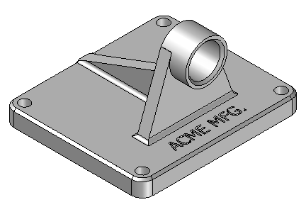
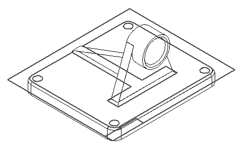
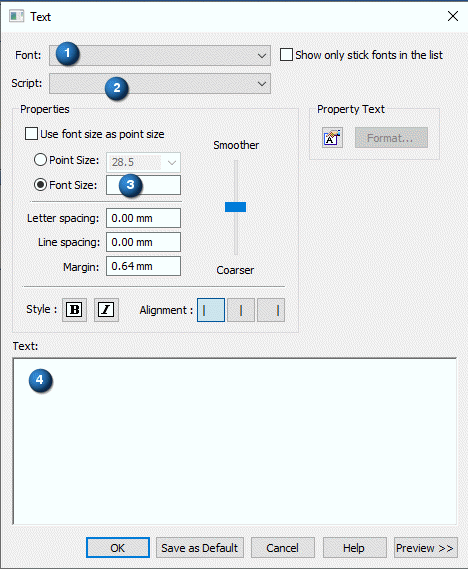
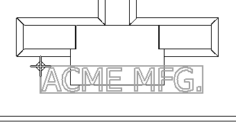
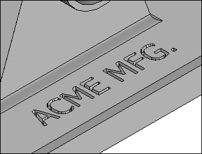

Activity: Embossing text
This activity covers the procedure of embossing text characters onto a simple model of a casting.
Overview
This activity covers the procedure of embossing text characters onto a simple model of a casting.

-
Open support.par.
To emboss text on a part, create a sketch containing the text profile.
Choose the Sketch command .
Select the face shown for the sketch plane.

On the Tools tab→Insert group, choose the Text Profile command .
In the Text dialog box, set the values as shown. In the Font field (1), choose Tahoma. In the Script field (2), choose Arabic. In the Font size control fields (3), set the values shown. In the Text box (4), type ACME MFG. and click OK.

Position the text in the approximate position shown, and click.

Click Close Sketch to complete the profile.
Click Finish.
Use the Extrude command and the text sketch created in the previous step to remove material from the part.
Choose the Extrude command.
On command bar, click the Select from Sketch option.
Select the sketch (text) and click the Accept button.
In the distance box, type 2 and press Enter.
Click below the profile to extend the text into the part.
Click Finish and Cancel to complete the cutout.
Hide all sketches.

Save the file as myblock.par.
Close the file. This completes the activity.
In this activity you learned how to create and add embossed text to a part.
-
Click the Close button in the upper–right corner of this activity window.